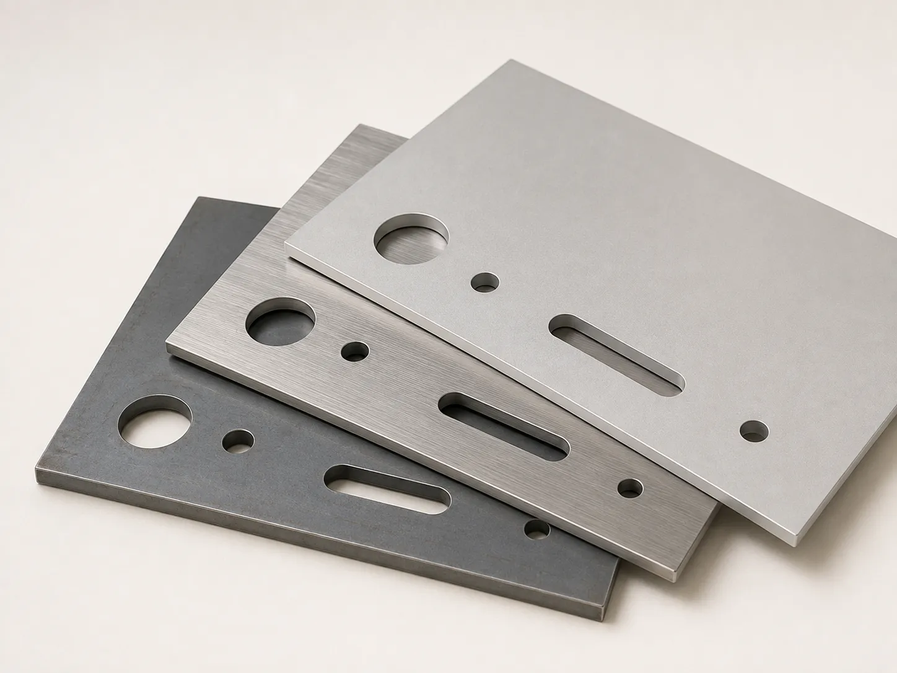

پانچ ورق و لوله
از طراحی قالب تا تولید ضربی
سوراخ، شیار و فرمهای خاص روی ورق و لولهی فلزی و پلیاتیلن. هایپرفب قالب پانچ را طراحی و میسازد، نمونهی آزمایشی را برای تأیید شما میزند و تولید ضربی را با کنترل کیفیت کامل تا تحویل قطعه پیش میبرد.
- پانچ: ورق و لوله
- جنس: فلزات و پلیمرها، از جمله پلیاتیلن
- قیمتگذاری: هزینهی ساخت قالب + هزینهی هر ضرب، بر اساس هندسه و جنس

پانچ ورق و لوله یعنی ایجاد سوراخ، شیار و فرمهای خاص روی ورق و لوله با ضربهی پرس و قالب؛ از سریعترین و اقتصادیترین روشها برای تیراژ تکراری. هایپرفب در تهران پانچ ورق و لولهی فلزی و پلیاتیلن را از طراحی و ساخت قالب پانچ و نمونهی آزمایشی تا تولید ضربی و کنترل کیفیت انجام میدهد و قطعات را به سراسر ایران ارسال میکند. هزینه دو بخش دارد، ساخت قالب و هزینهی هر ضرب، و پس از بررسی نقشه اعلام میشود؛ مشاوره: ۰۹۹۶۲۲۳۳۸۹۸.
- خدمت
- پانچ ورق و لوله، طراحی و ساخت قالب پانچ، تولید ضربی
- جنس
- فلزات (فولاد، گالوانیزه، استیل، آلومینیوم) و پلیمرها، از جمله پلیاتیلن
- قیمتگذاری
- هزینهی یکبارهی قالب + هزینهی هر ضرب، پس از بررسی نقشه
- نمونهکار
- شیار لوبیایی روی لولهی پلیاتیلن ۱۲۵ میلیمتری
- سفارش
- تلفنی: ۰۹۹۶۲۲۳۳۸۹۸ · بله: @hyperfab_pro
- محل
- تهران؛ ارسال به سراسر ایران
پانچ چیست و هایپرفب چه کاری انجام میدهد؟
پانچ (Punching) روش ایجاد سوراخ، شیار و برشهای شکلدار روی ورق و لوله با ضربهی پرس و قالب است. برای تیراژ تکراری، پانچ از سریعترین و اقتصادیترین روشهاست. پس از ساخت قالب، هر قطعه با یک یا چند ضرب به شکل نهایی میرسد و همهی قطعات یکسان درمیآیند. برای تیراژ کم یا طرحی که مدام عوض میشود، برش لیزر فلزات در هایپرفب اقتصادیتر است، چون هزینهی قالب ندارد.
هایپرفب پانچ را کامل انجام میدهد. نقشه را بررسی میکند، قالب پانچ را متناسب با جنس و ضخامت طراحی میکند و میسازد، نمونهی آزمایشی را برای تأیید شما میزند و بعد تولید ضربی و کنترل کیفیت را تا تحویل پیش میبرد. این خدمت هم ورق و هم لوله را پوشش میدهد، هم فلز و هم پلیمرهایی مثل پلیاتیلن.
پانچ لولهی پلیمری از کارهای دشوار این حوزه است. لوله گرد است، دیواره زیر ضربه تغییر شکل میدهد و پلیاتیلن رفتاری کاملاً متفاوت با فلز دارد. تیم هایپرفب روی لولهی پلیاتیلن با قطر ۱۲۵ میلیمتر، ضخامت دیوارهی ۵ میلیمتر و فشار کاری ۶ بار، شیارهای لوبیایی (kidney-shaped) پانچ کرده است. در یک پروژهی صنعتی دیگر هم کنترل کیفیت ۸٬۰۰۰ لولهی پانچشده با این تیم بوده است.
هایپرفب چه چیزهایی را پانچ میکند؟
ورق و لوله و پروفیل فلزی، لولهی پلیاتیلن و ورقهای پلیمری؛ با سوراخ، شیار، الگوی مشبک و فرمهای سفارشی، دقیقاً طبق نقشهی شما.
پانچ ورق فلزی
سوراخ گرد و چهارگوش، شیار، الگوهای تکرارشونده و فرمهای خاص روی ورق فولادی، گالوانیزه، استیل و آلومینیوم.
پانچ لوله و پروفیل فلزی
سوراخکاری و شیارزنی لوله و پروفیل فلزی برای سازه، اتصالات، قفسه، نرده و مبلمان.
پانچ لولهی پلیاتیلن
شیار و سوراخ روی لولهی پلیاتیلن، از جمله شیار لوبیایی؛ برای لولههای زهکش، فیلتر و توزیع.
پانچ ورق پلیمری
ورق پلیاتیلن و پلاستیکهای مهندسی برای واشر، صفحههای مشبک و قطعات تخت سوراخدار.
شکلهای سفارشی
از سوراخ گرد ساده تا شیار لوبیایی، الگوهای مشبک و فرمهای خاص، دقیقاً طبق نقشهی شما.
تولید ضربی تکرارپذیر
پس از ساخت قالب، قطعات با ضربهای یکسان تولید میشوند و ابعاد از قطعهی اول تا آخر ثابت میماند.
قیمت پانچ ورق و لوله چطور محاسبه میشود؟
قیمت پانچ دو بخش دارد: هزینهی یکبارهی ساخت قالب و هزینهی هر ضرب در تولید. هر دو جدا و شفاف اعلام میشوند و به هندسهی قطعه و جنس متریالی که پانچ میشود بستگی دارند.
| بخش هزینه | به چه چیزی بستگی دارد |
|---|---|
| ساخت قالب پانچ (یکبار) | هندسه و تعداد سوراخها و شیارها، دقت لازم، جنس و ضخامت قطعه، و ساده یا چندمرحلهای بودن قالب و مخصوص لوله بودنش |
| هر ضرب (تولید) | جنس و ضخامت متریال، تعداد ضرب لازم برای هر قطعه و تیراژ سفارش |
| متریال | اگر ورق یا لوله را هایپرفب تأمین کند، به قیمت روز |
چرا پروژهی پانچ را به هایپرفب بسپارید؟
مهندسی پیش از ساخت قالب
قالب گرانترین بخش پروژه است. پیش از ساخت، طرح از نگاه قالب بررسی میشود: فاصلهی سوراخ از لبه، نسبت قطر سوراخ به ضخامت و رفتار متریال زیر ضربه. هدف این است که قالب یک بار و درست ساخته شود.
تجربهی واقعی در پانچ لوله
از کنترل کیفیت ۸٬۰۰۰ لولهی پانچشده تا پانچ شیار لوبیایی روی لولهی پلیاتیلن ۱۲۵ میلیمتری؛ مسائل واقعی این کار را از نزدیک میشناسیم.
مسئولیت کامل تا تحویل
از طراحی قالب تا آخرین ضرب، پروژه یک مسئول دارد: هایپرفب. نمونه را پیش از تولید میبینید و کیفیت قطعات پیش از تحویل کنترل میشود.
سفارش پانچ در هایپرفب چه مراحلی دارد؟
پنج مرحله: ارسال نقشه، بررسی مهندسی، پیشنهاد قیمت، ساخت قالب و نمونه، و تولید ضربی و تحویل.
ارسال نقشه و مشخصات
نقشهی قطعه، جنس، ضخامت و تیراژ را بفرستید یا تلفنی شرح دهید. نمونهی فیزیکی قطعه هم کافی است.
بررسی مهندسی
طرح از نظر ساختپذیری با قالب بررسی و در صورت نیاز اصلاح پیشنهاد میشود.
پیشنهاد قیمت
هزینهی ساخت قالب و هزینهی هر ضرب جدا و شفاف اعلام میشود.
ساخت قالب و نمونه
قالب ساخته و نمونهی آزمایشی زده میشود تا پیش از تولید تأییدش کنید.
تولید ضربی و تحویل
تولید با کنترل کیفیت ابعادی انجام و قطعات بستهبندی و تحویل میشوند.
پانچ ورق و لوله کجا به کار میرود؟
لولههای زهکش و تخلیهی آب با شیار یا سوراخهای تکرارشونده.
لولهی فیلتر و صافی و لولههای توزیع آب و هوا.
صفحههای مشبک، توری و دریچهی تهویه.
قطعات تخت سوراخدار برای مونتاژ مثل واشر، براکت و صفحهی نصب.
بدنه و پنل تجهیزات صنعتی با الگوی سوراخ ثابت.
پروفیل و لولهی سوراخدار برای سازه، قفسه و مبلمان.
سؤالات متداول
هایپرفب پانچ ورق و لوله انجام میدهد؟
هایپرفب پانچ لولهی پلیاتیلن انجام میدهد؟
قیمت پانچ ورق و لوله چطور محاسبه میشود؟
حداقل تیراژ سفارش پانچ چقدر است؟
قالب پانچ را هم شما میسازید؟
چه شکلهایی را میشود پانچ کرد؟
برای گرفتن قیمت پانچ چه چیزی بفرستم؟
پانچ بهتر است یا برش لیزر؟
هایپرفب کجاست و به شهرهای دیگر هم ارسال دارد؟
پروژهی پانچ خود را با ما در میان بگذارید
نقشه یا نمونهی قطعه را بفرستید یا تماس بگیرید. کارشناس پروژههای صنعتی هایپرفب تلفنی پاسخگوی شماست.